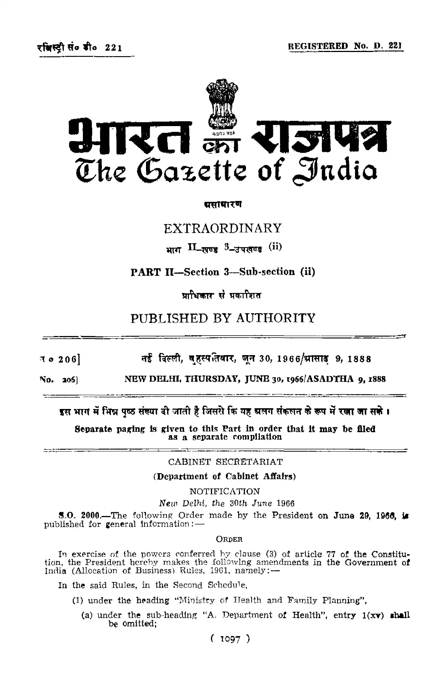
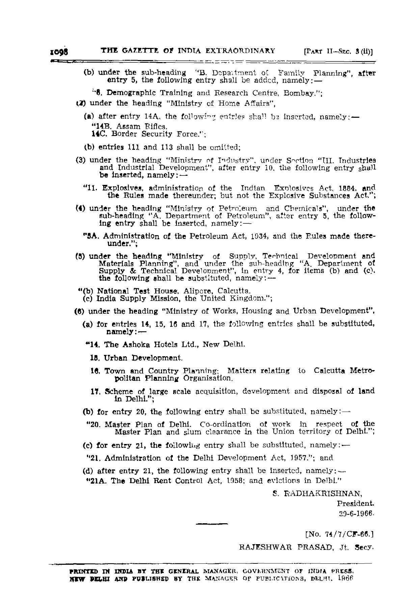

Amendment #53 (S.O. 2000, 1966)
11 changes: 0 to the First Schedule, 11 to the Second Schedule. 11 applied
The order, page by page
Page 1 of 2

1Schedule 2 › Ministry of Health and Family Planning › Department of Health › entry 1 › item xv
applied at schedule 2 › ministry Ministry of Health and Family Planning › department A › group_heading I › entry 1 › item xv in the Rules after #53
Page 2 of 2

234567891011after Schedule 2 › Ministry of Health and Family Planning › Department of Family Planning › entry 5
- 8. Demographic Training and Research Centre, Bombay.
applied at schedule 2 › ministry Ministry of Health and Family Planning › department B › entry 8 in the Rules after #53
after Schedule 2 › Ministry of Home Affairs › entry 14A
- 14B. Assam Rifles.
- 14C. Border Security Force.
applied at schedule 2 › ministry MINISTRY OF HOME AFFAIRS › part I › group_heading The following subjects which are relatable to… in the Rules after #53
Schedule 2 › Ministry of Home Affairs › entry 111; Schedule 2 › Ministry of Home Affairs › entry 113
applied at schedule 2 › ministry MINISTRY OF HOME AFFAIRS › part III › entry 111 in the Rules after #53
after Schedule 2 › Ministry of Industry › III. Industries and Industrial Development › entry 10
- 11. Explosives, administration of the Indian Explosives Act, 1884, and the Rules made thereunder; but not the Explosive Substances Act.
applied at schedule 2 › ministry Ministry of Industry › group_heading III › entry 11 in the Rules after #53
after Schedule 2 › Ministry of Petroleum and Chemicals › Department of Petroleum › entry 5
- BA. Administration of the Petroleum Act, 1934, and the Eules made thereunder.
applied at schedule 2 › ministry MINISTRY OF PETROLEUM & CHEMICALS › department A › group_heading BA in the Rules after #53
Schedule 2 › Ministry of Supply, Technical Development and Materials Planning › Department of Supply & Technical Development › entry 4 › item b; Schedule 2 › Ministry of Supply, Technical Development and Materials Planning › Department of Supply & Technical Development › entry 4 › item c
- b. National Test House, Alipore, Calcutta.
- c. India Supply Mission, the United Kingdom.
applied at schedule 2 › ministry MINISTRY OF SUPPLY TECHNICAL DEVELOPMENT & MATERIALS PLANNING › department A › entry 4 › item b in the Rules after #53
Schedule 2 › Ministry of Works, Housing and Urban Development › entry 14; Schedule 2 › Ministry of Works, Housing and Urban Development › entry 15; Schedule 2 › Ministry of Works, Housing and Urban Development › entry 16; Schedule 2 › Ministry of Works, Housing and Urban Development › entry 17
- 14. The Ashoka Hotels Ltd., New Delhi.
- 15. Urban Development.
- 16. Town and Country Planning; Matters relating to Calcutta Metropolitan Planning Organisation.
- 17. Scheme of large scale acquisition, development and disposal of land in Delhi.
applied at schedule 2 › ministry Ministry of Works, Housing & Urban Development › entry 14 in the Rules after #53
Schedule 2 › Ministry of Works, Housing and Urban Development › entry 20
- 20. Master Plan of Delhi. Co-ordination of work in respect of the Master Plan and slum clearance in the Union territory of Delhi.
applied at schedule 2 › ministry Ministry of Works, Housing & Urban Development › entry 20 in the Rules after #53
Schedule 2 › Ministry of Works, Housing and Urban Development › entry 21
- 21. Administration of the Delhi Development Act, 1957.
applied at schedule 2 › ministry Ministry of Works, Housing & Urban Development › entry 21 in the Rules after #53
after Schedule 2 › Ministry of Works, Housing and Urban Development › entry 21
- 21A. The Delhi Rent Control Act, 1958; and evictions in Delhi.
applied at schedule 2 › ministry Ministry of Works, Housing & Urban Development › entry 21A in the Rules after #53
How this document was read
From the Government of India (Allocation of Business) Rules, 1961 and their amendments, as published by the Cabinet Secretariat (cabsec.gov.in), read by orgpedia. The readings of the older scanned gazettes have known gaps.